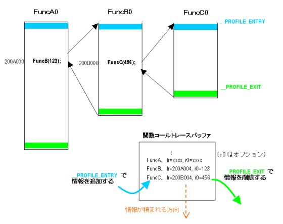

#include <nitro/os.h>void OS_InitCallTrace( void* buf, u32 size, OSCallTraceMode mode );
| buf | Buffer used for function call trace |
| size | Size of buffer used for function call trace |
| mode | Function call trace mode |
None.
This sets the buffer that will be used for function call trace, and begins the function trace. After you call this function and function call trace has been set, trace status will become Enable.
(This is the status after OS_EnableCallTrace() is called.))
In order for a function to be traced, it must be compiled with the profile feature ON. (When you compile with NITRO_PROFILE=TRUE, at compile time the -profile option will be attached and the profile feature will be ON.) When that code in which the profile feature is ON is mixed with code in which the profile feature is not ON, trace information will be obtained only for the code in which the feature is ON.
To enable features that are related to function call trace, at link time you must include libos.CALLTRACE.a (in the thumb version libos.CALLTRACE.thumb.a). To do this, specify NITRO_PROFILE_TYPE=CALLTRACE as a make option. You may also write it in the makefile. However, in the final ROM version (FINALROM) library, it will not do anything.
Information used for tracing (the number of bytes in sizeof(OSCallTraceInfo) - sizeof(OSCallTrace) which includes the buffer's end position, the current pointer, etc) is stored in the front of the buffer buf. If you are using a thread system, buffers are independent for each thread. Therefore, if you want to store trace information, you will have to define a separate buffer for each thread.
The trace mode mode specifies the method used for recording. When OS_CALLTRACE_STACK is specified, it will obtain a record at the entry point of functions in which the profile feature is ON, and discard the record at the exit. This is called "stack mode." When OS_CALLTRACE_LOG is specified, it will only obtain a record at the entry point of functions in which the profile feature is ON—it will not discard the record at the exit. Using this, you can operate in a "log mode" in which a record is kept of past functions.
When the function is called, the size that will be stored will be sizeof(OSCallTrace) bytes. In stack mode, when a function call nest having a maximum of n loops is generated, the buffer size size must be sizeof(OSCallTraceInfo) - sizeof(OSCallTrace*) + sizeof(OSCallTrace)*n bytes. Log mode uses the buffer as a ring buffer. Therefore, a buffer of the size in the expression shown above will be able to attach n records.
Now we will describe the operating principle in detail. When the profile feature is ON, __PROFILE_ENTRY and __PROFILE_EXIT codes that call functions are appended at a function's entry and exit points respectively. NitroSDK uses them to obtain information (return address and, optionally, arguments) that is in the function at the time it was entered at __PROFILE_ENTRY, and stack it in a buffer. In the case of stack mode, at __PROFILE_EXIT it discards the most recently acquired information. In log mode, information is not discarded at __PROFILE_EXIT.
The following diagram describes the operation in stack mode.

To display the information that is in the function call trace buffer, call either OS_DumpCallTrace(), or OS_DumpThreadCallTrace().
(Example)
#define BUFFER_SIZE 0x400
u32 traceBuffer[ BUFFER_SIZE/sizeof(u32) ];
OS_InitCallTrace( traceBuffer, BUFFER_SIZE, OS_CALLTRACE_STACK );
:
ÅF
OS_DumpCallTrace();
OS_DumpCallTrace, OS_DumpThreadCallTrace
06/02/2004 Changed the description of the make option.
05/19/2004 Added a description of the make options.
04/22/2004 Added a description of the stack mode and the log mode.
04/13/2004 Initial version.
CONFIDENTIAL